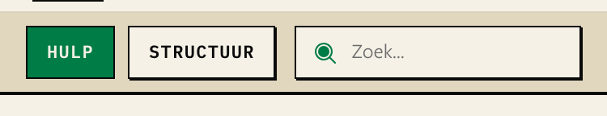
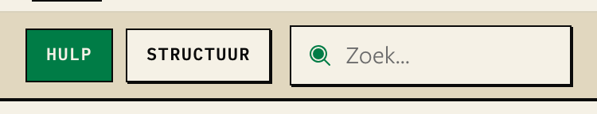
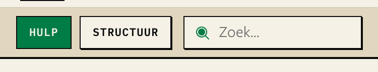
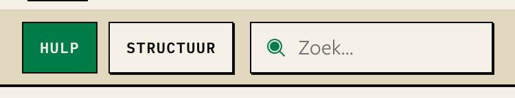
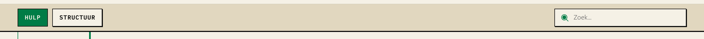
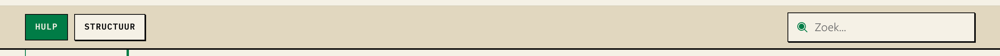
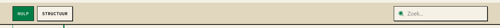

On an iPhone or iPad, Safari zooms the page in when you tap a field whose text is smaller than 16px. After you type, the page stays zoomed in, so you must pinch it back out. Three fields on the site are smaller than 16px. This page shows each one now and with each fix. Shots come from production (kcvv-nextjs.vercel.app), with the new size put in as CSS, 2026-09-29.
A · suggested 16px on touch screens only. Tailwind's pointer-coarse: variant (Tailwind 4.3, already installed): text-body-sm pointer-coarse:text-body-md. Phones and iPads get 16px, so no zoom. A computer with a mouse keeps the smaller step.
B 16px everywhere. One class per field. Desktop changes too.
I dropped the “16px below 1024px” idea from before. An iPad on its side is 1024px wide or more, so it would still zoom.
| Field | Now | A on touch | A with mouse | B | What B costs on desktop |
|---|---|---|---|---|---|
| /hulp main search | 15px | 16px | 16px | 16px | Same as A: nothing more |
| /hulp sticky search | 13px | 16px | 14px | 16px | Sticky bar 5px taller, unless the box stretches (see below) |
| Calendar “+ voeg toe” | 11px | 16px | 12px | 16px | Dropdown 30px wider, bigger than the chips next to it |
Limit: Chrome cannot copy Safari's zoom, so these shots show the size change, not the zoom itself. Test the zoom once on a real iPhone.
Whichever option you pick (A or B), the sticky search goes to 16px on phones. The tabs next to it must stay the same height as the box.
This rule is already in the code. section-nav.ts says the box is never taller than the tabs, so the bar does not jump when the box slides in (#2821). The two boxes only matched because someone tuned the padding by hand, and no test checks it.
self-stretch) and drops its own top and bottom padding. It is 33.3px, the same as the tabs. The bar does not change. The heights match by design, so the next padding change cannot break it./ploegen/…). Every section bar on the site gets 5px taller.





